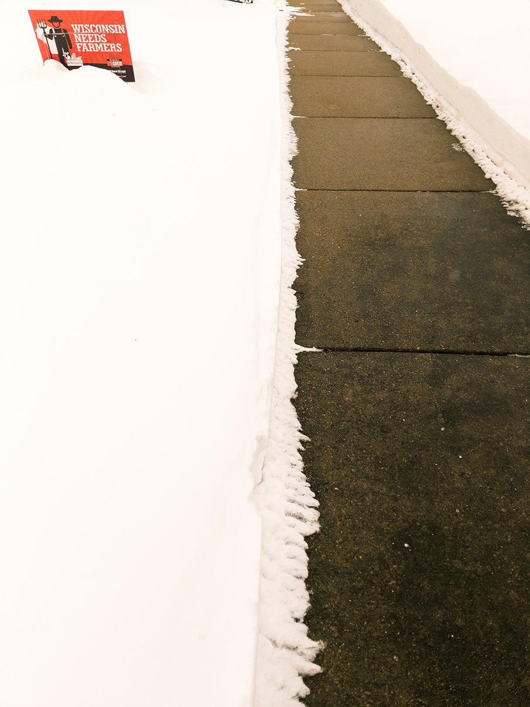
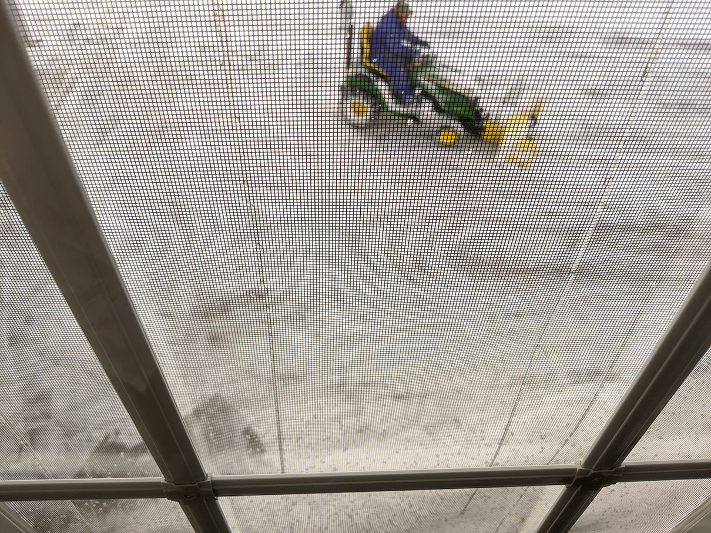
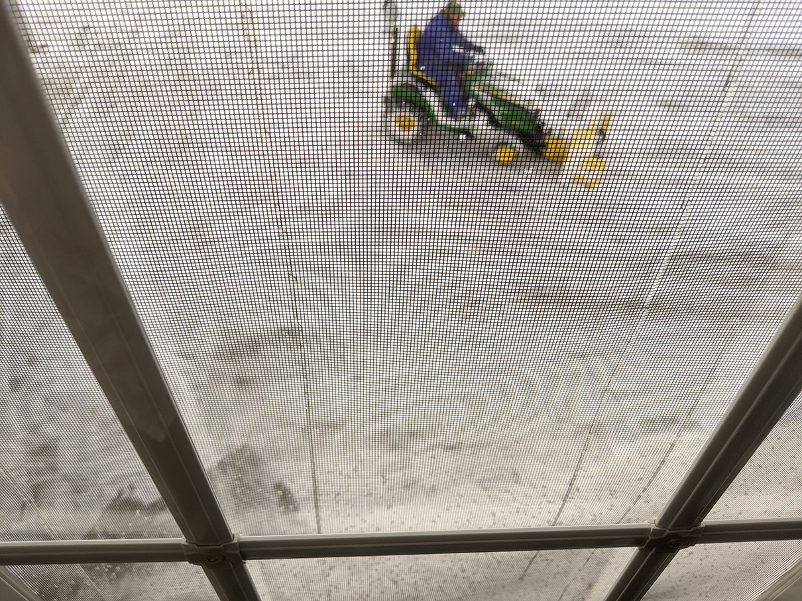
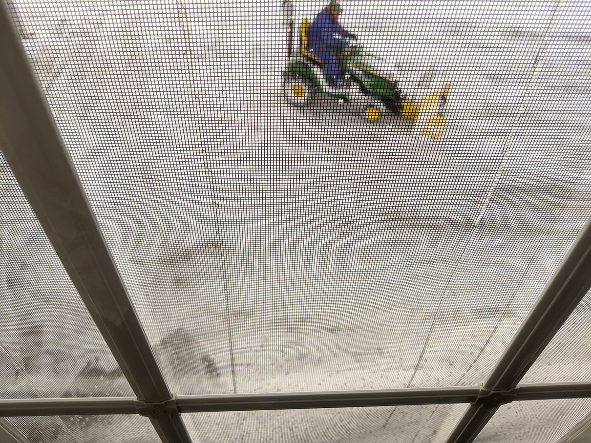

"Life in lockdown"- digital photo series (february 2021)
 


I didn't see many people or do much traveling during Wisconsin's 2020-21 COVID lockdown. But I learned some new languages, updated my software skills, and channeled my creativity with art, computer, and digital media classes at the University of Wisconsin-Madison.
University projects focused heavily on learning new software and navigating in a remote learning environment. During these historic times, I planned and built a website, recorded a documentary podcast, did weekly photoshoots, edited and mixed sound, edited and manipulated photos, learned HTML and CSS code to build a website, and created collages and patterns with Adobe Creative Suite. Check out these projects!
